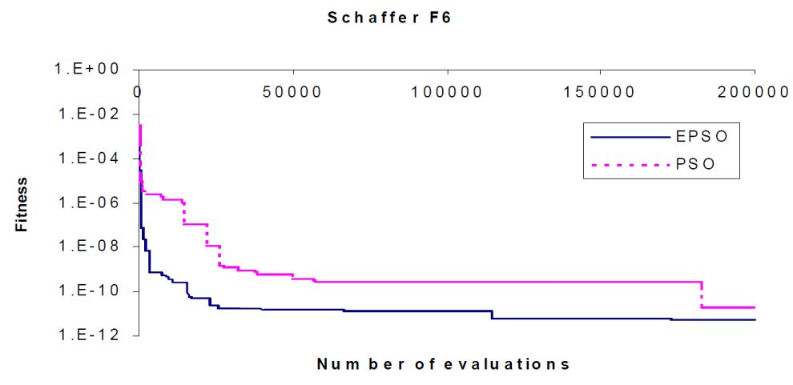
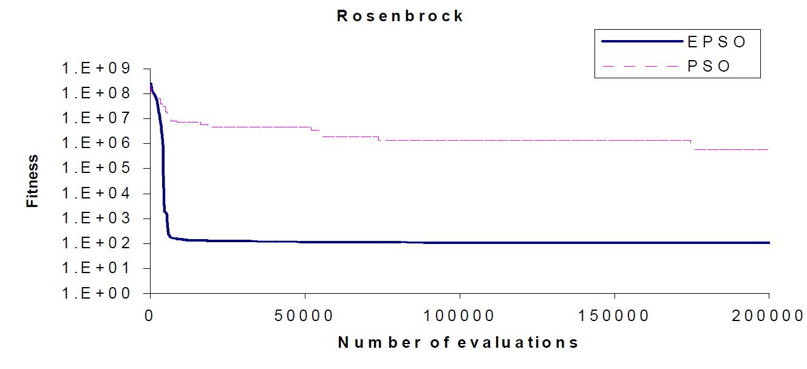
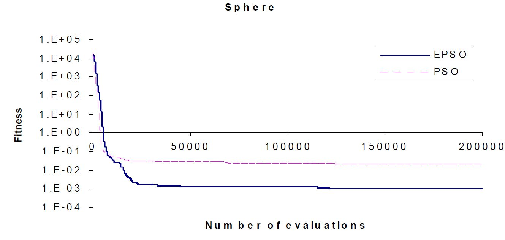
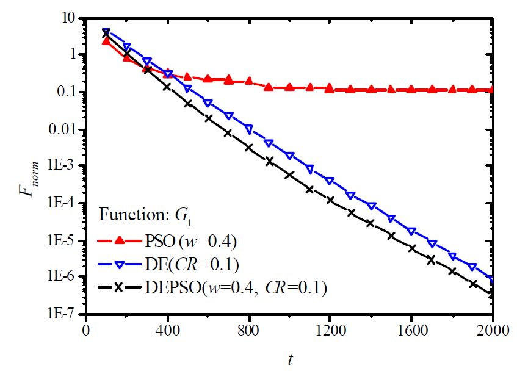
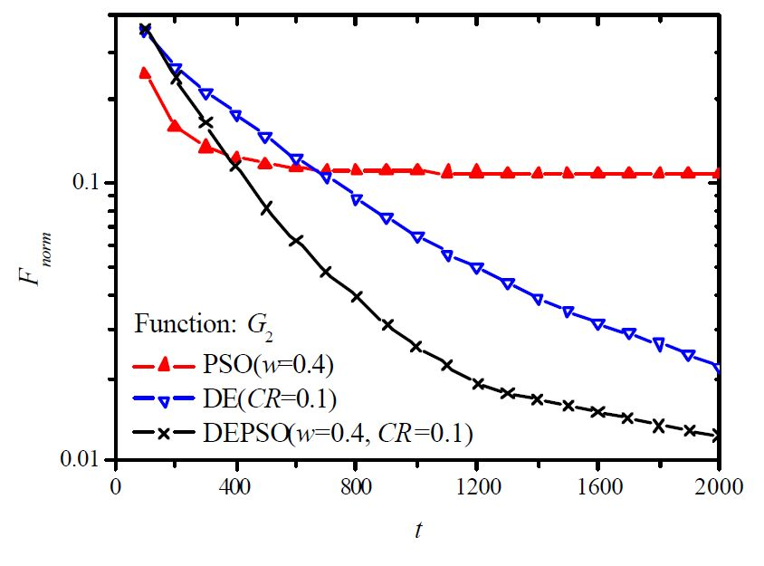
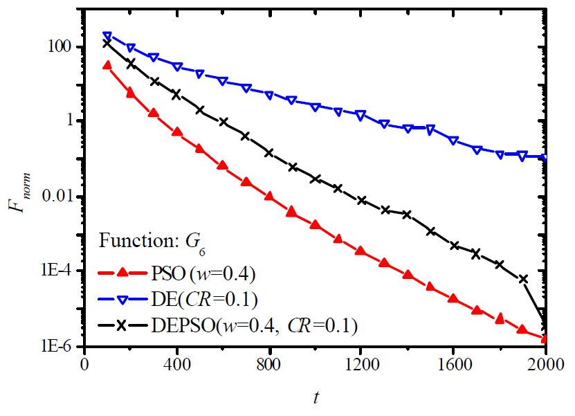
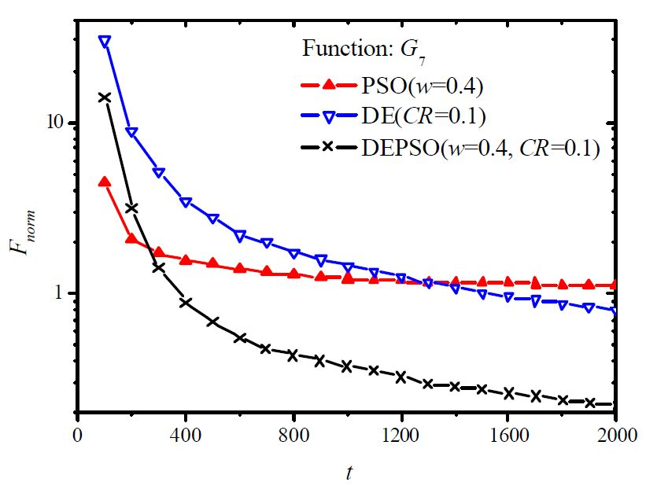
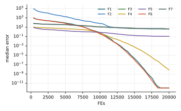

Chương 3 · Trí tuệ bầy đànChapter 3 · Swarm Intelligence
Tối ưu bầy đànParticle Swarm OptimizationParticle Swarm Optimization — PSOPSO — learning to search from a flock of birds
Châu Văn Vân · PTITHCM
Mục tiêu bài họcLearning objectives
Sau chương này, bạn có thểAfter this chapter you will be able to
- Giải thích vì sao mỗi cá thể vừa nhớ pbest vừa nhìn về gbest.Explain why each particle both remembers pbest and looks toward gbest.
- Viết và diễn giải công thức cập nhật vận tốc, vị trí, cùng vai trò của w, c1, c2.Write and interpret the velocity and position updates and the roles of w, c1, c2.
- Chọn tham số và vmax hợp lý cho một bài toán cụ thể.Choose sensible parameters and vmax for a given problem.
- Phân biệt PSO liên tục, Binary PSO và các biến thể lai GA-PSO, EPSO, DEPSO.Tell apart continuous PSO, Binary PSO and the GA-PSO, EPSO, DEPSO hybrids.
Tổng quanOverview
Ý tưởng đến từ một đàn chim đi kiếm ănThe idea comes from a flock of birds looking for food
- Do Kennedy và Eberhart đề xuất năm 1995.Proposed by Kennedy and Eberhart in 1995.
- Mô phỏng hành vi xã hội của đàn chim, đàn cá: không con nào biết trước thức ăn ở đâu, nhưng cả đàn vẫn tìm ra nhờ quan sát lẫn nhau.Inspired by the social behaviour of bird flocks and fish schools: no individual knows where the food is, yet the group finds it by watching one another.
- Thuộc họ thuật toán dùng trí tuệ bầy đàn (swarm intelligence).Belongs to the family of swarm intelligence algorithms.
- Là thuật toán tối ưu dựa trên quần thể: nhiều lời giải cùng tìm kiếm song song.A population-based optimizer: many candidate solutions search in parallel.
Ý tưởng cốt lõiCore idea
Mỗi cá thể di chuyển dưới ba lực kéo: thói quen của chính nó, ký ức về chỗ tốt nhất nó từng đến, và tiếng gọi từ chỗ tốt nhất cả bầy đã tìm thấy.Each particle moves under three pulls: its own habit, the memory of the best place it has visited, and the call of the best place the whole swarm has found.
Các thành phần của PSOComponents of PSO
Bầy, cá thể và hai “ký ức tốt nhất”A swarm, its particles and two “best memories”
- Bầy (swarm)Swarm
- Tập các cá thểThe set of particles S
- Cá thể (particle)Particle
- Một lời giải ứng viên của bài toán, mang theo:A candidate solution to the problem, carrying:
- · Vị trí· Position
- Xi = (xi1, xi2, …, xin) ∈ ℝn
- · Vận tốc· Velocity
- Vi = (vi1, vi2, …, vin) ∈ ℝn
Tốt nhất của riêng cá thểThe particle's own best
Pi = (pi1, pi2, …, pin) ∈ ℝn pbesti = f(Pi)Tốt nhất của cả bầyThe swarm's best
Pg ∈ ℝn, gbest = f(Pg)Thuật toán PSOThe PSO algorithm
Sáu bước, lặp đi lặp lạiSix steps, repeated
Bước 2 đến bước 5 tạo thành một vòng lặp. Mỗi vòng, cả bầy nhích lại gần vùng tốt hơn một chút.Steps 2 to 5 form a loop. With every pass, the swarm edges a little closer to better regions.
- Khởi tạo một bầy gồm N cá thể.Initialize a swarm of N particles.
- Đánh giá độ thích nghi của từng cá thể.Evaluate the fitness of every particle.
- Cập nhật vị trí tốt nhất từng đạt Pi của mỗi cá thể.Update each particle's best position so far, Pi.
- Cập nhật vị trí của cá thể tốt nhất cả bầy Pg.Update the position of the swarm's best particle, Pg.
- Cập nhật vận tốc và vị trí của mỗi cá thể theo Pi và Pg.Update each particle's velocity and position using Pi and Pg.
- Quay lại bước 2 cho đến khi thỏa điều kiện dừng.Go back to step 2 until a stopping criterion is met.
2 – 5 vòng lặp chínhmain loop
Thuật toán PSOThe PSO algorithm
Lưu đồFlowchart
Thuật toán PSOThe PSO algorithm
Cập nhật vận tốc: cộng ba lực lạiVelocity update: adding up three pulls
- r1, r2 ~ U(0, 1): hệ số ngẫu nhiên, rút lại ở mỗi lần cập nhật, giúp bầy không đi theo một khuôn cứng.: random coefficients, redrawn at every update so the swarm never moves in a rigid pattern.
- φ1, φ2: hệ số gia tốc, cho biết cá thể tin vào bản thân hay tin vào bầy nhiều hơn.: acceleration coefficients, setting how much a particle trusts itself versus the swarm.
- Hai hiệu Pi − Xi và Pg − Xi là các vector chỉ từ vị trí hiện tại về hai “ký ức tốt nhất”.The differences Pi − Xi and Pg − Xi are vectors pointing from the current position to the two “best memories”.
Thuật toán PSO · dạng chuẩnThe PSO algorithm · standard form
Trọng số quán tính w: điều chỉnh đà bayInertia weight w: tuning the momentum
- Shi và Eberhart (1998) thêm w vào số hạng quán tính. Đây là dạng PSO được dùng phổ biến nhất hiện nay; c1, c2 chính là φ1, φ2 ở trang trước.Shi and Eberhart (1998) added w to the inertia term. This is the most widely used form of PSO today; c1, c2 are the φ1, φ2 of the previous slide.
- w lớn: giữ đà, bay xa, thiên về khám phá. w nhỏ: phanh lại, tìm kỹ quanh vùng tốt, thiên về khai thác.Large w: keeps momentum and flies far, favouring exploration. Small w: brakes and searches locally, favouring exploitation.
- Lịch thường dùng: giảm tuyến tính w từ 0.9 xuống 0.4 theo số vòng lặp (Shi & Eberhart, 1999). Các biến thể Adaptive PSO chỉnh w theo trạng thái của bầy.A common schedule: decrease w linearly from 0.9 to 0.4 over the iterations (Shi & Eberhart, 1999). Adaptive PSO variants tune w from the swarm's state.
Thuật toán PSOThe PSO algorithm
Cập nhật vị trí: bước theo vận tốc mớiPosition update: step along the new velocity
Vận tốc mới là tổng của ba vector nối đuôi nhau. Cá thể đi theo vector tổng, tức một hướng dung hòa giữa đà cũ, kinh nghiệm riêng và kinh nghiệm của bầy.The new velocity is the sum of three vectors placed head to tail. The particle follows the resultant, a compromise between its momentum, its own experience and the swarm's experience.
Tham sốParameters
Hệ số gia tốcAcceleration coefficients φ1, φ2: không quá rụt rè, không quá liều: neither too timid nor too bold
- Quá nhỏ: bước nhảy của các cá thể bị hạn chế, bầy hội tụ chậm.Too small: particles take tiny steps and the swarm converges slowly.
- Quá lớn: cá thể văng qua lại ngày càng xa, bầy không hội tụ.Too large: particles swing back and forth ever wider and the swarm fails to converge.
- Thông thường chọnA common choice is φ1 + φ2 ≤ 4.
Tham sốParameters
Vận tốc tối đa: một chiếc phanh cho từng chiềuMaximum velocity: a brake for every dimension
Vận tốc tối đa của một cá thể ở chiều thứ d lấy bằng độ rộng miền tìm kiếm của chiều đó.A particle's maximum velocity in dimension d is set to the width of the search range in that dimension.
nếuelse if vid < −vmax thìthen vid = −vmax
UBd, LBd: cận trên và cận dưới của chiều thứ d. Kẹp vận tốc giúp cá thể không “bay khỏi” miền tìm kiếm chỉ sau một bước.: upper and lower bounds of dimension d. Clamping keeps a particle from “flying out” of the search space in a single step.
Ví dụ minh họaWorked example
Bốn cá thể đi tìm đỉnh cao nhấtFour particles looking for the highest peak
PSO rời rạcDiscrete PSO
Binary PSO: khi lời giải là một chuỗi bitBinary PSO: when a solution is a bit string
- Cũng do Kennedy và Eberhart giới thiệu. Mỗi cá thể là một chuỗi nhị phân 0 – 1.Also introduced by Kennedy and Eberhart. Each particle is a 0 – 1 binary string.
- Vị trí không còn “di chuyển” được nữa; thay vào đó, ta hỏi xác suất để mỗi bit bằng 1:A position can no longer “move”; instead we ask for the probability that each bit equals 1:
Vận tốc vẫn cập nhật như PSO liên tục:The velocity is updated just as in continuous PSO:
PSO rời rạcDiscrete PSO
Ép vận tốc về đoạn [0, 1] bằng hàm sigmoidSquashing velocity into [0, 1] with a sigmoid
vid đóng vai trò một ngưỡng trong hàm xác suất, nên cần được đưa về đoạn [0.0, 1.0]: acts as a threshold in a probability function, so it must be mapped into [0.0, 1.0]:
Trạng thái của chiều thứ d trong cá thể i ở thế hệ t:The state of dimension d of particle i at generation t:
xtid = 0 nếuif ρid ≥ sig(vtid)
với ρid là số ngẫu nhiên phân phối đều trên [0, 1].where ρid is a uniformly distributed random number in [0, 1].
Các biến thể PSOPSO variants
Bốn hướng cải tiến chínhFour main lines of improvement
Hybrid PSO
Lồng ghép khả năng của các kỹ thuật tính toán tiến hóa khác vào PSO.Incorporates the capabilities of other evolutionary computation techniques.
Adaptive PSO
Tự điều chỉnh tham số của PSO trong quá trình chạy để đạt hiệu năng tốt hơn.Adapts PSO's parameters during the run for better performance.
PSO trong môi trường phức tạpPSO in complex environments
Bài toán đa mục tiêu, có ràng buộc, hoặc bám theo hệ thống động.Multi-objective or constrained problems, or tracking dynamic systems.
Các biến thể khácOther variants
Thay đổi công thức gốc để cải thiện hiệu năng.Modifications to the original formulation to improve performance.
Phần tiếp theo đi sâu vào nhánh Hybrid PSO: GA-PSO, EPSO và DEPSO.The following slides dig into Hybrid PSO: GA-PSO, EPSO and DEPSO.
Hybrid PSO
GA-PSO: thêm chọn lọc tự nhiên vào bầyGA-PSO: adding natural selection to the swarm
- Kết hợp điểm mạnh của trí tuệ bầy đàn với cơ chế chọn lọc tự nhiên của giải thuật di truyền.Combines the strengths of swarm intelligence with the natural selection mechanism of genetic algorithms.
- Nhờ chọn lọc, cá thể có thể nhảy từ vùng này sang vùng khác, giúp hội tụ nhanh hơn.Selection lets particles jump from one region to another, which speeds up convergence.
- Có khả năng “lai ghép” (breeding) giữa các cá thể.Particles gain the ability to “breed”.
- Theo một tỉ lệ chọn lọc, vị trí của các cá thể có độ thích nghi thấp được thay bằng vị trí của các cá thể có độ thích nghi cao.According to a selection rate, positions of low-fitness particles are replaced by those of high-fitness particles.
Màu đậm: độ thích nghi cao. Ba cá thể kém nhất (cam) nhận vị trí của ba cá thể tốt nhất.Darker means fitter. The three weakest particles (orange) take over the positions of the three best.
Hybrid PSO · EPSO
Evolutionary PSO: để trọng số tự tiến hóaEvolutionary PSO: letting the weights evolve
- Bổ sung một thủ tục chọn lọc vào PSO.Adds a selection procedure to PSO.
- Các tham số tự thích nghi: mỗi cá thể mang trọng số riêng, và chính trọng số cũng bị đột biến.Self-adaptive parameters: each particle carries its own weights, and the weights themselves are mutated.
Chuyển động của cá thể:The particle movement is defined as:
Phần tô vàng là các trọng số đã đột biến; P′g là gbest đã bị nhiễu. Nguồn: Miranda & Fonseca, 2002.Highlighted terms are the mutated weights; P′g is the perturbed gbest. Source: Miranda & Fonseca, 2002.
Hybrid PSO · EPSO
Đột biến trọng số và gbest, rồi chọn lọcMutate the weights and gbest, then select
Đột biếnMutation
Tham số học τ, τ′ có thể cố định, hoặc thay đổi động như các tham số chiến lược.The learning parameters τ, τ′ can be fixed, or change dynamically as strategic parameters.
Chọn lọc sinh tồnSurvival selection
Đấu loại ngẫu nhiên (stochastic tournament): bản gốc và bản đột biến cạnh tranh nhau; bản tốt hơn thường thắng, nhưng bản kém vẫn có một cơ hội nhỏ được giữ lại.Stochastic tournament: the original and its mutated copy compete; the better one usually wins, but the weaker one still keeps a small chance of surviving.
Hybrid PSO · EPSO
EPSO hội tụ nhanh hơn và sâu hơn PSOEPSO converges faster and deeper than PSO



Trục tung: độ thích nghi, thang log, càng thấp càng tốt. Trục hoành: số lần đánh giá hàm. Trên cả ba hàm Schaffer F6, Rosenbrock và Sphere, đường EPSO nằm dưới đường PSO.Vertical axis: fitness on a log scale, lower is better. Horizontal axis: number of function evaluations. On all three functions, Schaffer F6, Rosenbrock and Sphere, the EPSO curve lies below the PSO curve.
Hybrid PSO · DEPSO
DEPSO: PSO và tiến hóa vi phân thay phiên nhauDEPSO: PSO and differential evolution take turns
- Lai giữa tiến hóa vi phân (Differential Evolution, DE) và PSO.A hybrid of Differential Evolution (DE) and PSO.
- Toán tử DE được áp lên vị trí tốt nhất của cá thể, nhằm kéo những cá thể đã rơi vào cực tiểu địa phương ra ngoài.A DE operator is applied to each particle's best position to pull out particles that have fallen into local minima.
- Hai cơ chế luân phiên: vòng lặp lẻ chạy PSO gốc, vòng lặp chẵn chạy toán tử DE.The two alternate: original PSO at odd iterations, the DE operator at even iterations.
NguồnSource: Zhang & Xie, 2003.
Hybrid PSO · DEPSO
Đột biến DE trên vị trí tốt nhất của cá thểDE mutation on each particle's best position
1. Tạo điểm thử từ chínhCreate a trial point from Pi: Ti = Pi
2. Với mỗi chiều thứFor each dimension d:
k là số nguyên ngẫu nhiên trong [1, n], bảo đảm có ít nhất một chiều bị đột biến.k is a random integer in [1, n], which guarantees that at least one dimension is mutated.
3. Bước nhảy vi phân lấy từ bốn cá thể ngẫu nhiên:The differential step comes from four random particles:
4. Chỉ giữ điểm thử nếu nó tốt hơn:Keep the trial point only if it is better:
Ghi chú: bản gốc ghi Pr3 − Pr3 (luôn bằng 0); ở đây sửa thành Pr3 − Pr4 theo công thức DEPSO của Zhang & Xie, 2003.Note: the source slide reads Pr3 − Pr3 (always zero); corrected here to Pr3 − Pr4 following the DEPSO formula of Zhang & Xie, 2003.
Hybrid PSO · DEPSO
DEPSO so với PSO và DEDEPSO versus PSO and DE
Khoảng cách trung bình tới tối ưu, càng thấp càng tốt. Cấu hình: PSO w = 0.4; DE CR = 0.1; DEPSO w = 0.4, CR = 0.1.Mean distance to the optimum, lower is better. Settings: PSO w = 0.4; DE CR = 0.1; DEPSO w = 0.4, CR = 0.1.
DEPSO tốt nhất trên G1, G2, G7. Riêng G6, PSO thuần lại xuống thấp nhất: lai ghép không phải lúc nào cũng thắng.DEPSO is best on G1, G2 and G7. On G6, plain PSO reaches the lowest value: hybridization does not always win.




Ứng dụngApplications
Vì sao PSO lan rộng nhanh như vậy?Why did PSO spread so quickly?
Dễ cài đặt, ít đòi hỏi về tính liên tục của hàm mục tiêu hay cấu trúc không gian tìm kiếm, lại thích nghi được với môi trường động. Nhờ vậy PSO được dùng trong ngày càng nhiều lĩnh vực:It is easy to implement, places few demands on the continuity of the objective or the structure of the search space, and adapts to dynamic environments. So PSO keeps finding new fields:
- Điện tử và điện từElectronics and electromagnetics
- Xử lý tín hiệu, ảnh và videoSignal, image and video processing
- Mạng nơ-ronNeural networks
- Mạng truyền thôngCommunication networks
- …
Ví dụ tính tay · bài toán có ràng buộcWorked example · a constrained problem
Một vòng PSO bằng tay, và cái bẫy của ràng buộcOne PSO iteration by hand, and the constraint trap
- 5 cá thể, c1 = c2 = 1, vận tốc đầu bằng 0, r1 = 0.25, r2 = 0.85.5 particles, c1 = c2 = 1, zero initial velocity, r1 = 0.25, r2 = 0.85.
- Giá trị đầu: f = 206, 181, −81, −38.75, 5.25; gbest là (3, −5, −4) với f = −81.Initial values: f = 206, 181, −81, −38.75, 5.25; gbest is (3, −5, −4) with f = −81.
- Cá thể 1 tại (−4, −2, 2): v = 0.85 · ((3, −5, −4) − (−4, −2, 2)) = (5.95, −2.55, −5.1), nên x = (1.95, −4.55, −3.1), f = −47.0025.Particle 1 at (−4, −2, 2): v = 0.85 · ((3, −5, −4) − (−4, −2, 2)) = (5.95, −2.55, −5.1), so x = (1.95, −4.55, −3.1), f = −47.0025.
Điều sách tham khảo bỏ quaWhat the reference book overlooks
- gbest ban đầu đã vi phạm ràng buộc: 3² + (−5)² = 34 > 5.The initial gbest already violates a constraint: 3² + (−5)² = 34 > 5.
- Kết quả cuối “−170 tại (5, −5, 5)” sai: f(5, −5, 5) = −166; giá trị −170 đạt tại (5, −5, 3), và điểm này cũng vi phạm ràng buộc.The final “−170 at (5, −5, 5)” is wrong: f(5, −5, 5) = −166; −170 is reached at (5, −5, 3), which is also infeasible.
- Nghiệm đúng khi giữ ràng buộc: f ≈ −23.67 tại (1.454, −1.699, 3) (kiểm bằng SLSQP, 729 điểm khởi đầu).The true constrained optimum: f ≈ −23.67 at (1.454, −1.699, 3) (checked with SLSQP from 729 starts).
- Bài học: PSO gốc không tự xử lý ràng buộc; cần hàm phạt hoặc sửa nghiệm (chương 1).Lesson: plain PSO does not handle constraints; use a penalty or a repair step (chapter 1).
Thực nghiệm · PSOExperiment · PSO
Kết quả trên bộ 7 hàm, D = 10, 30 lần chạyResults on the 7-function suite, D = 10, 30 runs
| HàmFunction | Trung bìnhMean | Độ lệchStd | Trung vịMedian | so PSOvs PSO |
|---|---|---|---|---|
| F1 · Sphere | 0 | 0 | 0 | — |
| F2 · Rosenbrock | 3.98e+0 | 2.71e+0 | 4.34e+0 | — |
| F3 · Rastrigin | 4.54e+0 | 2.29e+0 | 3.98e+0 | — |
| F4 · Ackley | 8.67e−9 | 1.28e−8 | 0 | — |
| F5 · Griewank | 1.21e−1 | 6.44e−2 | 1.10e−1 | — |
| F6 · Shifted Sphere | 0 | 0 | 0 | — |
| F7 · Shifted Rastrigin | 5.46e+0 | 2.98e+0 | 4.01e+0 | — |
- Sai số f(xbest) − f* sau 20 000 lần đánh giá; n = 30; tham số mặc định của bài gốc; giá trị < 10−8 ghi là 0.Error f(xbest) − f* after 20,000 evaluations; n = 30; default parameters of the original paper; values < 10−8 shown as 0.
- Cột cuối: Wilcoxon rank-sum với PSO (α = 0.05): + tốt hơn, − kém hơn, ≈ không khác biệt.Last column: Wilcoxon rank-sum vs PSO (α = 0.05): + better, − worse, ≈ no difference.
- Xếp hạng Friedman trung bình: 5.93, đứng thứ 4/18 trong 18 thuật toán của giáo trình.Average Friedman rank: 5.93, position 4/18 among the textbook’s 18 algorithms.
- PSO là mốc so sánh cho mọi thuật toán khác trong giáo trình (cột “so PSO”).PSO is the reference for every other algorithm in this book (the “vs PSO” column).
Thực nghiệm · PSOExperiment · PSO
Đường hội tụ (trung vị 30 lần chạy)Convergence (median of 30 runs)

Mã nguồnSource code
Mã nguồn PythonPython source code
Đoạn trích phần cập nhật chính; tệp đầy đủ có chú thích và tham số mặc định theo bài gốc.Excerpt of the main update; the full file documents the default parameters of the original paper. code/si/algorithms/pso.py
while not prob.done: t += 1 w = w_max - (w_max - w_min) * t / T r1, r2 = rng.random(X.shape), rng.random(X.shape) V = w * V + c1 * r1 * (P - X) + c2 * r2 * (g - X) V = np.clip(V, -vmax, vmax) X = prob.clip(X + V) f = prob(X) better = f < pf P[better], pf[better] = X[better], f[better] g = P[np.argmin(pf)].copy() return prob.best_x, prob.best_f
Chạy lại toàn bộ thực nghiệm: python -m experiments.run_continuous trong thư mục code/ (xem PROTOCOL.md).Reproduce all experiments: python -m experiments.run_continuous inside code/ (see PROTOCOL.md).
Đánh giáAssessment
PSO: đơn giản, nhanh, là mốc so sánh chuẩnPSO: simple, fast, the standard baseline
Điểm mạnhStrengths
- Ít tham số, dễ cài đặt, dễ song song hóa.Few parameters, easy to implement and parallelize.
- Đứng thứ 4/18 trong giao thức của giáo trình, không thiên lệch gốc tọa độ.Ranks 4/18 in this book's protocol, with no origin bias.
- Rất nhiều biến thể và ứng dụng đã được kiểm chứng.Many variants and well-tested applications.
Hạn chế và biến thểLimitations and variants
- Dễ hội tụ sớm trên hàm đa đỉnh (Rastrigin: trung vị 3.98e+0).Prone to premature convergence on multimodal functions (Rastrigin median 3.98e+0).
- Nhạy với w, c1, c2, vmax.Sensitive to w, c1, c2, vmax.
- Thung lũng hẹp vẫn khó: Rosenbrock (F2) trung vị 4.34e+0.Narrow valleys stay hard: Rosenbrock (F2) median 4.34e+0.
Bài tập và thực hànhExercises and labs
Luyện tập: tính tay rồi lập trìnhPractice: by hand, then in code
Bài tập lý thuyếtTheory exercises
- Tính tay một bước: X = (1, 2), V = (0.5, −0.5), Pi = (2, 2), Pg = (3, 1), w = 0.7, c1 = c2 = 1.5, r1 = 0.4, r2 = 0.6. Tìm V′ và X′.Compute one step by hand: X = (1, 2), V = (0.5, −0.5), Pi = (2, 2), Pg = (3, 1), w = 0.7, c1 = c2 = 1.5, r1 = 0.4, r2 = 0.6. Find V′ and X′.
- Nếu w = 0 và c1 = 0, PSO còn lại hành vi gì? Vì sao dễ hội tụ sớm?With w = 0 and c1 = 0, what behaviour is left? Why does it converge prematurely?
- Vì sao cần kẹp vmax khi chưa dùng trọng số quán tính?Why is vmax clamping needed when no inertia weight is used?
Thực hành Python / MATLABPython / MATLAB labs
- Cài PSO bằng Python/NumPy cho hàm Sphere và Rastrigin 10 chiều.Implement PSO in Python/NumPy for the 10-D Sphere and Rastrigin functions.
- So sánh w = 0.7 cố định với w giảm tuyến tính 0.9 → 0.4 qua 30 lần chạy; báo cáo trung bình ± độ lệch chuẩn và kiểm định Wilcoxon.Compare a fixed w = 0.7 with a linear 0.9 → 0.4 schedule over 30 runs; report mean ± std and a Wilcoxon test.
- Cài Binary PSO cho bài toán cái túi 0/1 cỡ nhỏ.Implement Binary PSO for a small 0/1 knapsack problem.
Tài liệu tham khảo (1/2)References (1/2)
Đọc thêm: các bài báo gốcFurther reading: the original papers
- J. Kennedy and R. Eberhart, “Particle swarm optimization,” in Proceedings of ICNN'95 - International Conference on Neural Networks, 1995, pp. 1942–1948, doi: 10.1109/ICNN.1995.488968.
- J. Kennedy and R. Eberhart, “A discrete binary version of the particle swarm algorithm,” in 1997 IEEE International Conference on Systems, Man, and Cybernetics. Computational Cybernetics and Simulation, 1997, pp. 4104–4108, doi: 10.1109/ICSMC.1997.637339.
- Y. Shi and R. Eberhart, “A modified particle swarm optimizer,” in 1998 IEEE International Conference on Evolutionary Computation Proceedings. IEEE World Congress on Computational Intelligence (Cat. No.98TH8360), 1998, pp. 69–73, doi: 10.1109/ICEC.1998.699146.
- J. Kennedy, R. C. Eberhart, and Y. Shi, Swarm Intelligence. San Francisco, CA, USA: Morgan Kaufmann, 2001.
- M. Clerc and J. Kennedy, “The particle swarm - explosion, stability, and convergence in a multidimensional complex space,” IEEE Trans. Evol. Computat., vol. 6, no. 1, pp. 58–73, 2002, doi: 10.1109/4235.985692.
- V. Miranda and N. Fonseca, “EPSO - best-of-two-worlds meta-heuristic applied to power system problems,” in Proceedings of the 2002 Congress on Evolutionary Computation. CEC'02 (Cat. No.02TH8600), 2002, pp. 1080–1085, doi: 10.1109/CEC.2002.1004393.
- W.-J. Zhang and X.-F. Xie, “DEPSO: hybrid particle swarm with differential evolution operator,” in SMC'03 Conference Proceedings. 2003 IEEE International Conference on Systems, Man and Cybernetics. Conference Theme - System Security and Assurance (Cat. No.03CH37483), 2003, pp. 3816–3821, doi: 10.1109/ICSMC.2003.1244483.
Tài liệu tham khảo (2/2)References (2/2)
Đọc thêm: các bài báo gốcFurther reading: the original papers
- R. Poli, J. Kennedy, and T. Blackwell, “Particle swarm optimization,” Swarm Intell, vol. 1, no. 1, pp. 33–57, 2007, doi: 10.1007/s11721-007-0002-0.
- M. O. Okwu and L. K. Tartibu, Metaheuristic Optimization: Nature-Inspired Algorithms Swarm and Computational Intelligence, Theory and Applications. Springer International Publishing, 2021, doi: 10.1007/978-3-030-61111-8.
Tóm lạiIn short
Cảm ơn các bạn đã theo dõiThank you for your attention
Châu Văn Vân · PTITHCM